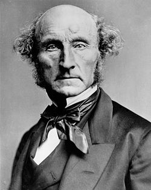

La ética utilitarista de John Stuart Mill se centra en la idea de que las acciones son moralmente correctas si maximizan la felicidad y el bienestar general.
-Principio de Utilidad: La base del utilitarismo de Mill es el principio de utilidad o “el mayor bien para el mayor número”. Las acciones son correctas si producen felicidad o placer y erróneas si producen dolor o sufrimiento.
-Felicidad como Fin Supremo: Mill sostiene que la felicidad, entendida como placer y ausencia de dolor, es el único fin intrínseco y deseable en sí mismo.
-Imparcialidad y Consecuencias: En la evaluación moral, todas las personas afectadas cuentan por igual. La moralidad de una acción se juzga por sus consecuencias para el bienestar general, no por intenciones o deberes inherentes.
-Calidad de Placeres: Mill distingue entre placeres superiores e inferiores, valorando más los placeres intelectuales y morales sobre los físicos. Sostiene que algunos placeres son más valiosos que otros debido a su calidad.